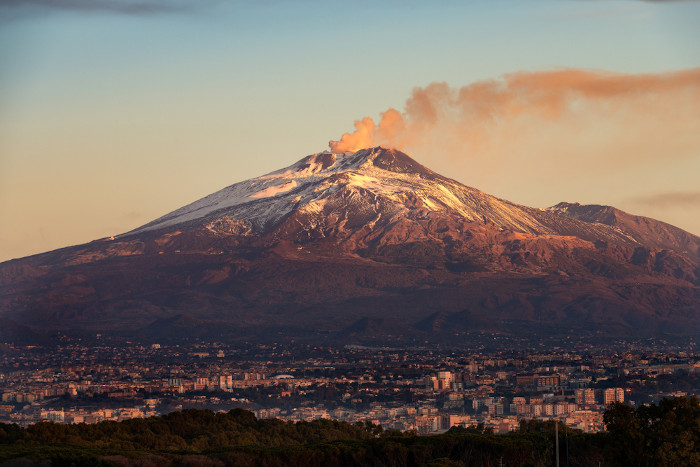

Etna
Sicília - Itália
O Etna é um vulcão ativo situado na parte oriental da Sicília (Itália), entre as províncias de Messina e Catânia. É o mais alto vulcão da Europa fora da região do Cáucaso, e um dos mais altos do mundo, atingindo aproximadamente 3 350 metros de altitude, podendo aumentar, gradualmente devido às frequentes erupções. Sendo o vulcão mais alto Europa ocidental, o Etna é a mais alta montanha da Itália ao sul dos Alpes. A extensão total da base do vulcão é de 1 190 km², com uma circunferência de 140 km, o que faz do Etna superar em quase três vezes o tamanho do Vesúvio.
